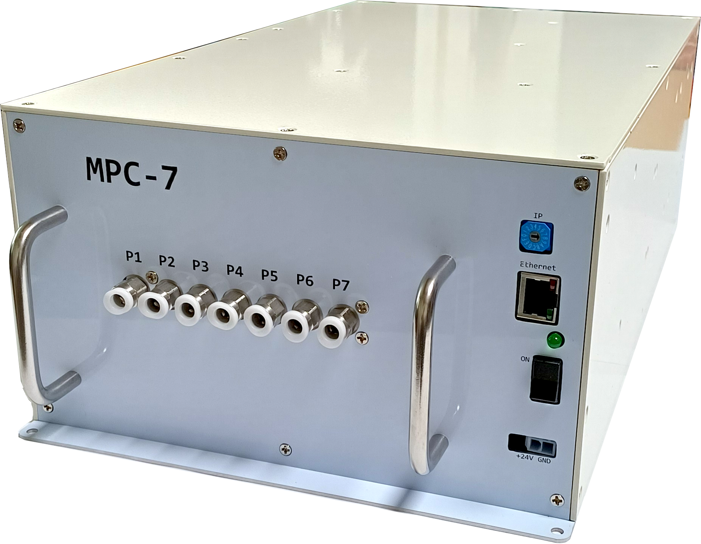
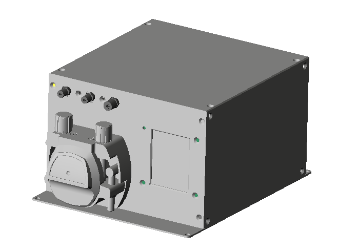
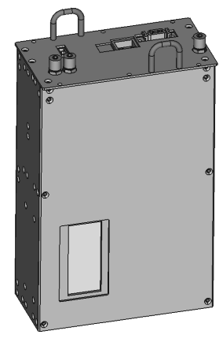

Pressure Controller
The Pressure Controller ensures consistent ink pressure for optimal print quality in industrial inkjet applications.

MPC7
independent 7-channel pressure controller for backpressure and purge pressure control
MPC7 has pressure generators inside for purge and backpressure control.
read more...
MPC with peristaltic pump
Single peristaltic pump can provide backpressure and purge pressure control.
read more...Integrated Ink Tanks
Ink tanks with recirculation ensure a consistent ink supply and prevent drying in industrial inkjet printing applications.

P7 integrated ink tank
ethernet communication for simple installation
ink tank with integrated recirculation system
integrated pressure controller to provide consistent ink pressure
ink pressure sensor and ink level sensor
read more...
P5 integrated ink tank with driver electronics
All in one solution for each printhead
ink tank with integrated recirculation system
integrated pressure controller to provide consistent ink pressure
ink pressure sensor and ink level sensor
read more...